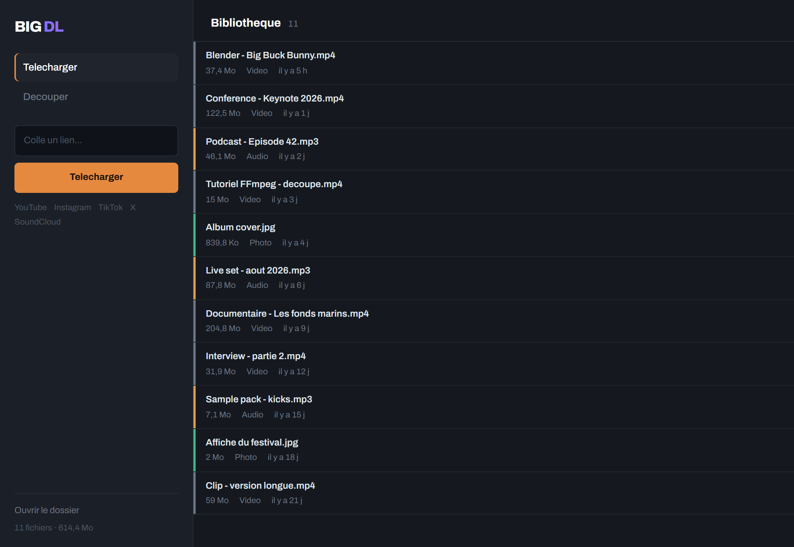

Un telechargeur de medias pour Windows : video, audio ou photo depuis YouTube, Instagram, TikTok, X et SoundCloud. Un seul executable, rien a installer. Seules les photos Instagram demandent un fichier de cookies.
Voir la derniere version ~99 Mo · Windows 10 et 11 · code source

C'est un executable non signe, telecharge depuis le depot d'un inconnu. Autant que tu saches exactement ce qu'il fait avant de double-cliquer.
%TEMP%, et l'efface en se fermant proprement.127.0.0.1:5555, jamais expose au reseau. Il refuse les requetes emises par une autre page web, ce qui empeche un site visite dans ton navigateur de lire ou supprimer tes fichiers ; un programme lance sur ta machine, lui, peut lui parler. Vers l'exterieur : uniquement les plateformes dont tu colles les liens, aucune telemetrie, aucune verification de mise a jour.Colle l'adresse et l'application reconnait la plateforme, puis propose les formats disponibles. Pour YouTube, utilise une adresse youtube.com ou youtu.be : les variantes m., music. et /live/ ne sont pas reconnues.
L'onglet Decouper prend un fichier depuis ton disque, pas seulement ceux telecharges ici : MP4, MKV, WEBM, AVI, MOV, MP3, M4A, WAV, FLAC ou OGG, jusqu'a 2 Go. Deux poignees sur une piste, un apercu qui suit, et FFmpeg fait la coupe.
La coupe est reencodee pour tomber juste a l'image pres plutot qu'au groupe d'images le plus proche, ce qui evite le blanc ou le saut au demarrage. Le fichier d'origine n'est jamais touche : la coupe part dans downloads/ avec le reste, sous nom_v2.mp4, puis _v3, et ainsi de suite.
Une coupe en cours s'arrete avec le meme bouton Arreter, et le fichier charge reste en place : on arrete generalement une coupe pour la refaire avec d'autres bornes, pas pour changer de fichier.
Python 3.10 ou plus recent. FFmpeg n'a pas besoin d'etre installe sur la machine, mais il doit etre la avant install.bat, qui verifie sa presence et s'arrete sinon.
git clone https://github.com/NotDjz/Big_download.git cd Big_download py download_ffmpeg.py install.bat run.bat
Lance ces commandes depuis la racine du depot : install.bat travaille dans le dossier courant. build.bat produit l'executable et y embarque FFmpeg.
La cause la plus frequente est une erreur 403.
Les plateformes durcissent regulierement leurs protections, et yt-dlp — la bibliotheque qui fait le travail — suit avec quelques jours de retard. L'executable embarque une version figee : il ne peut pas se mettre a jour tout seul. Une version de BIG DL vieille de quelques mois finira donc par se faire refuser.
Recupere la derniere version. Depuis le code source, run.bat met yt-dlp a jour a chaque lancement.
En attendant, un bouton Arreter apparait pendant le telechargement. Il libere l'interface tout de suite, sans attendre que le travail en cours reponde, et le fichier a moitie recupere est efface plutot que laisse dans la bibliotheque. Auparavant il fallait fermer la fenetre, ce qui coupait le travail en plein milieu et laissait ses fichiers intermediaires sur le disque jusqu'au demarrage suivant. La coupure elle-meme est presque toujours immediate ; dans le cas rare ou yt-dlp reste bloque a un endroit qui ne rend jamais la main, la tache s'arrete a la fermeture de l'application, mais tu peux relancer sans attendre.